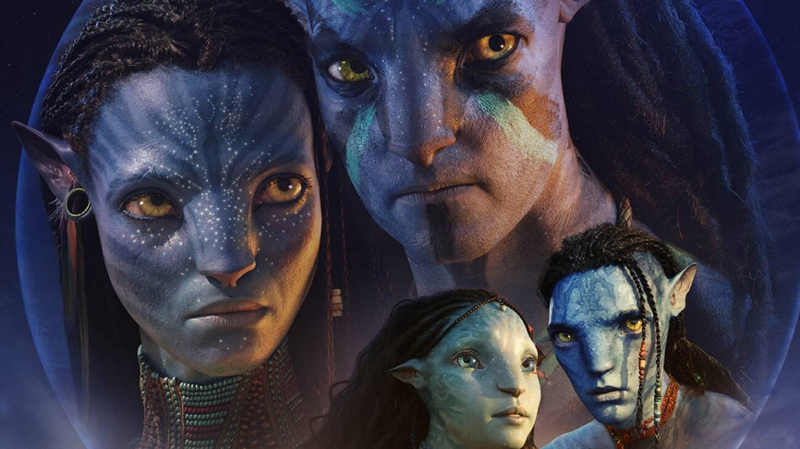

Dada a repercussão e a revolução do primeiro, dá para dizer que Avatar 2, de James Cameron, é o filme mais aguardado do momento, certo? Certo. É, até hoje, a maior bilheteria do cinema (US$ 2,847 bilhões), na frente até mesmo de Vingadores: Ultimato (US$ 2,797 bilhões).
